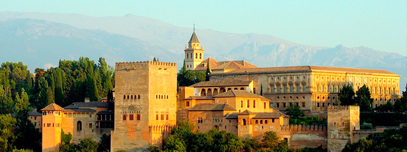
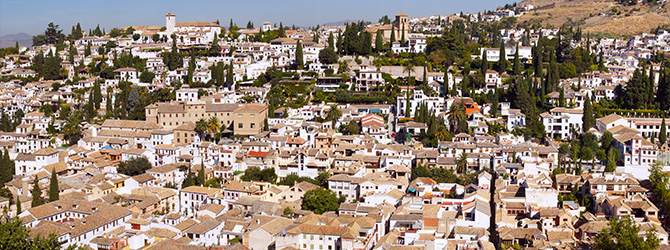

La Alhambra
El símbolo de la ciudad por excelencia. Allí tuvo lugar el fin de la ocupación musulmana en la península y el nacimiento del imperio español. Fue de declarada patrimonio Mundial por la UNESCO en 1984 y es única por sus palacios y jardines que muestran la plenitud de la cultura musulmana.
El Albaicín
El barrio de El Albaicín, declarado por la UNESCO como Patrimonio de la Humanidad en 1994, es el lugar ideal para pasear y perderse entre sus rincones, visitar sus cármenes y observar la ciudad y la Alhambra desde sus miradores.
Tapas en Granada

Granada es famosa por sus tapas, por lo general gratuitas con la consumición. Es recomendado visitar las distintas "rutas de la tapa" para darle un capricho al paladar o pasar un buen rato con los amigos.
Sierra Nevada
A tan solo 40 minutos de la capital se puede disfrutar del esquí en invierno y primavera y del senderismo en verano. El pico más alto de la península (Mulhacén) y una de las estaciones de esquí más reputadas del país se encuentran aquí.
Playas

No es conocida en España por sus playas, pero si por la experiencia de pasar de la nieve al mar en un par de horas. Existen distintas playas en las que disfrutar de un día soleado tomando el sol.
La Alpujarra

Entre almendros, viñedos y bancales, a los lomos de Sierra Nevada se encuentran los pueblos de la Alpujarra. Ideales para pasar unos días, olvidarse de todo y relajarse, disfrutando de una cultura y unas costumbres únicas.
Más información
Para más información acceda a la Web Oficial de Turismo Ciudad de Granada.
- Plaza del Carmen s/n
- (+34) 902 405 045 / (+34) 958 248 280
- informacion@granadatur.com